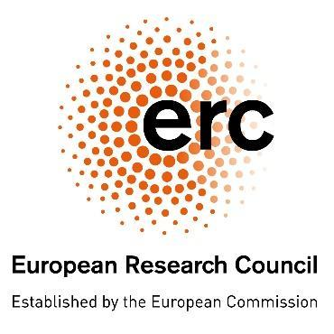

ERC Starting Grant, 2026-2031
Optimal Tradeoffs between Randomness, Time, and Space
DERAND studies how closely deterministic algorithms can match randomized ones in time and space, when randomness is truly necessary, and how weak sources of randomness can be made useful. The project develops new tools in pseudorandomness with the goal of advancing space-bounded and low-overhead derandomization.
Applications are invited for postdoctoral positions in my group at Ben-Gurion University, supported by an ERC Starting Grant. Candidates with a strong background in theoretical computer science and an interest in pseudorandomness, broadly construed, are encouraged to apply.
The positions offer a competitive salary and generous travel support. Postdoctoral appointments are for one year, with the possibility of extension for up to two additional years. Start dates are flexible.
Successful applicants will join BGU's large Institute for the Theory of Computing, with ample opportunities to collaborate within the institute and across Israel's active theory community.
To apply: email deand@bgu.ac.il with a CV including a publication list, a short description of your research interests, and the names and contact details of three referees.
PhD positions are also available for mathematically inclined students from Israeli and international universities who are interested in complexity theory, particularly pseudorandomness and related areas. To apply, email deand@bgu.ac.il with your CV and grade sheet.
